Fabio Carlesso is a senior backend engineer who has been shipping Java to production since 2010, mostly for the banking sector.
Press kit.
Copy, paste, ship.
Bios, headshot, talk topics and logos — for recruiters, event organisers and podcast hosts. Use anything on this page as is; no need to ask first.
at a glance
The spec sheet.
// for recruiters & hiring teams- name
- Fabio Nami Carlesso
- role
- Senior backend software engineer
- experience
- 15+ years · Java in production since 2010
- sector
- Banking · regulated environments
- stack
- java · spring boot · aws · postgres · docker · python
- certs
- AWS Certified Cloud Practitioner · EXIN Agile Scrum Foundation
- education
- B.S. Computer Science · postgraduate in Java Technology and in Data Science & Big Data
- location
- Foz do Iguaçu, BR · GMT-3
- languages
- pt-BR (native) · en (fluent)
- open_to
- Full-time roles · select consulting
- answer
- 42
bio
Introduce me in three lengths.
// follows the EN/PT toggleFabio Carlesso is a senior backend engineer based in Foz do Iguaçu, Brazil. Since 2010, Fabio has built and run Java systems in production — most of them in banking, where code has to be correct, auditable and debuggable at 3am. Day to day that means Spring Boot, AWS, Postgres and Docker. AWS Certified Cloud Practitioner.
Fabio Carlesso is a senior backend software engineer with more than fifteen years of Java in production. The career started in 2010 on Java 6 and IBM WebSphere and runs through to Spring Boot 3 services in AWS containers. Since 2018 it has been in the banking sector, where systems run all night, sit under regulation and have to be debuggable by whoever is on call.
Fabio holds a B.S. in Computer Science, postgraduate specialisations in Java Technology and in Data Science & Big Data, and the AWS Certified Cloud Practitioner and EXIN Agile Scrum Foundation certifications. Outside the day job, Fabio designs, builds and runs independent products — FightOssStreak, Cartola Odds and the Carlesso Pilates platform — all live in production, all with public source code.
Based in Foz do Iguaçu, Brazil (GMT-3). Works in Portuguese and English.
headshot

Crop freely. Please don't filter, recolour or distort.
speaking · podcasts
What I talk about.
-
Java in regulated environments
Fifteen years of shipping to production in banking: auditability, change control, and moving fast without breaking compliance.
-
From WebSphere to Spring Boot 3
What changed between Java 6 on an app server and containers on AWS — and the craft that didn't.
-
Code the on-call engineer can debug
Readable stack traces, honest logs and tests you'd want to read at 2am.
-
Side projects, in production
Building, hosting and keeping small products alive as a team of one — FightOssStreak, Cartola Odds and Carlesso Pilates.
brand assets
Logos.
// outlined svg, no fonts needed · png in the zip







do
- Keep the parens of (fc) in signal blue on every colour variant.
- Use the dark mark on dark surfaces and the light mark on paper.
- Leave clear space around the mark of at least one paren's width.
don't
- Recolour, stretch, rotate or add effects to the mark.
- Retype (fc) in another typeface — use the files.
- Use [42] as the main logo. It's the easter egg.
colour · type
Palette & typography.
// dark-firstink
#0A0D10backgroundink-2
#11161Bcards, panelsblue
#58A6FFaccent · the parensamber
#E3B34142 · highlightsrust
#C8602Arare warm accentpaper
#F5F1EAlight surfacesbone
#FAFAF7text on darkAa {}JetBrains Monodisplay · headings · code
AaIBM Plex Sansbody text
AaIBM Plex Serif italicaccents in prose
booking · interviews
Get in touch.
// email is fastest · < 24h on weekdaysfabiocarlesso.com/press.html